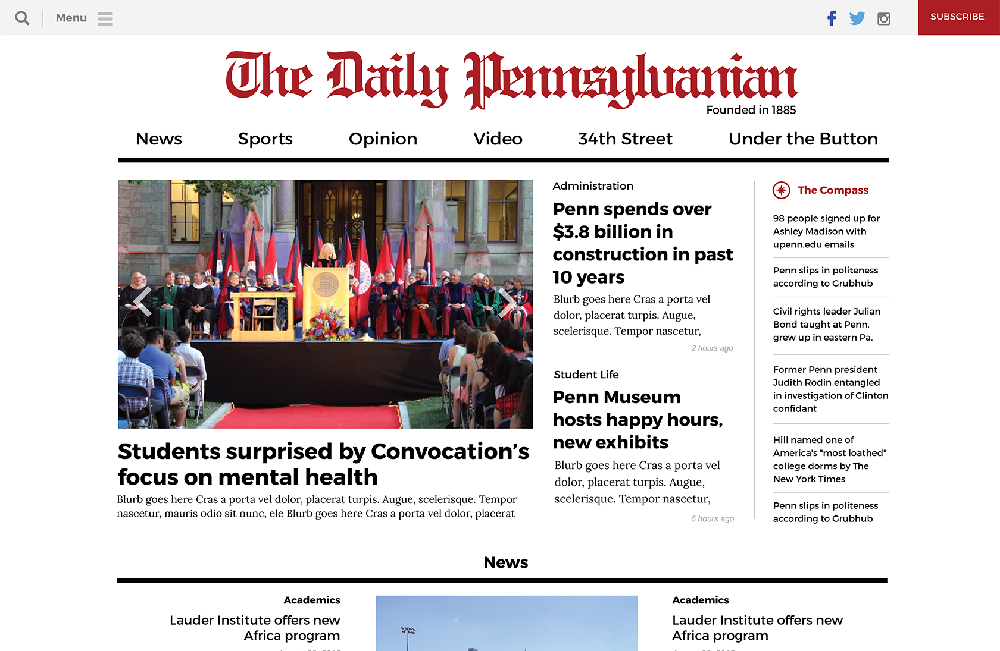
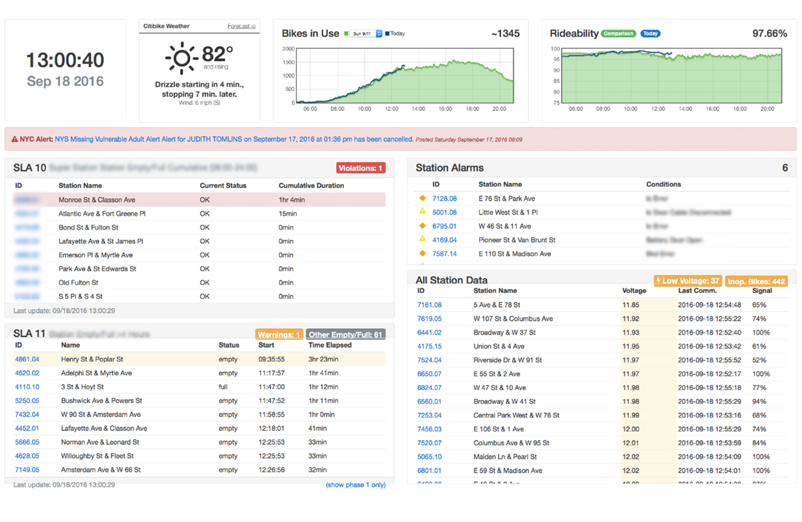
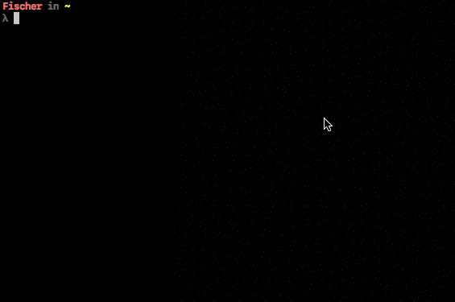
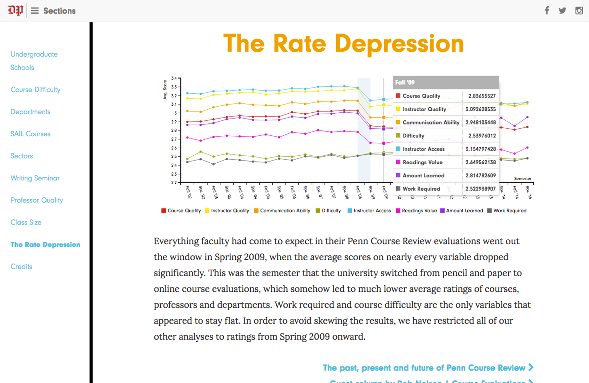
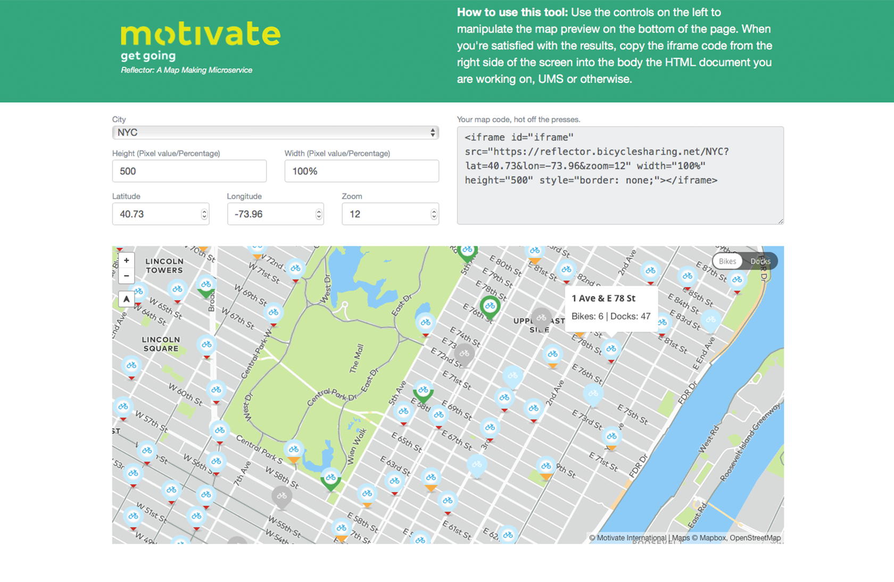

Hey there! I'm Andrew Fischer, a 20 year-old student and aspiring software engineer.
At The University of Pennsylvania in Philadelphia, PA., I'm studying a diverse curriculum heavy in Math and Sciences. At Penn, I hope to major in computational biology. I currently work as the Director of Online Projects at The Daily Pennsylvanian, overseeing digital strategy from a technical perspective, as well as creating beautiful interactive sites for special articles.
Previously, I attended Stuyvesant High School, where I was given a world-class introduction to computer science. There, I was a member of The Spectator and stood as Business Manager on the Editorial Board. I was also a member of the technical crew of Stuyvesant's Theatre Community, where I built and designed sets for shows.
Interested in working with me? Drop me a line.
Made with ♡ by Andrew Fischer. © 2015-2016, all rights reserved.

Worked with many members of The Daily Pennsylvanian to create a new site that is aesthetically plesaing, fast, responsive, and easy to navigate. Currently undergoing internal testing, set for release in early october.

Built a dashboard to aid dispatchers at CitiBike and other bike-sharing companies in rebalancing bikes across the city. Brings together important data from multiple locations, giving the dispatchers a central source of information. Currently in use.

A web-scraping API to get athlete and team information from Penn Athletics' website. Currently broken, as Penn Athletics changed their site layout and broke our scraper :(.

An analysis of >10 years of Penn Course Review data. Worked with writers, designers, and stat majors (R is weird!) to find trends in data. Packaged data into a beautiful site, complete with charts and interactives.

A node.js based microservice to dynamically create maps with live bike-sharing data. Uses Motivate's GBFS APIs for data retrieval. Dynamically generates maps based on URL parameters, and returns an iframe which can be used on any website. Front-end interface allows easy map creation, outputting iframe code that can be copy-pasted into any website.
{kind=link}
{kind=link}
{kind=link}
{kind=link}
{kind=link}